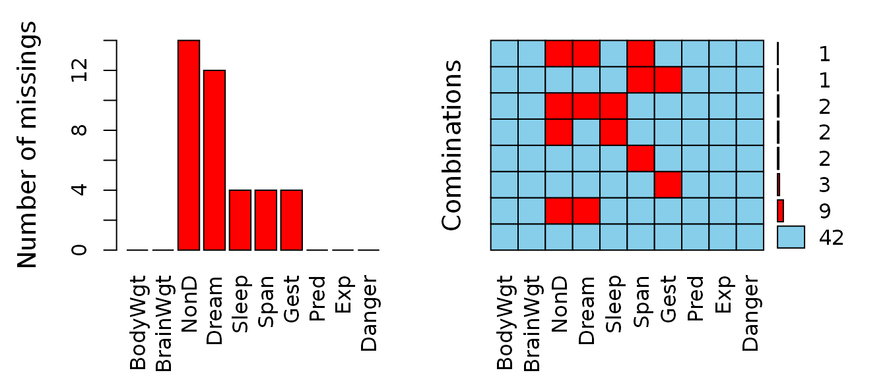
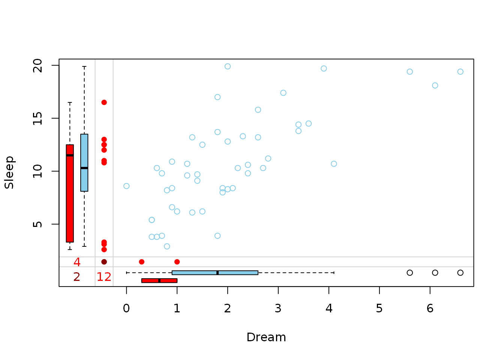
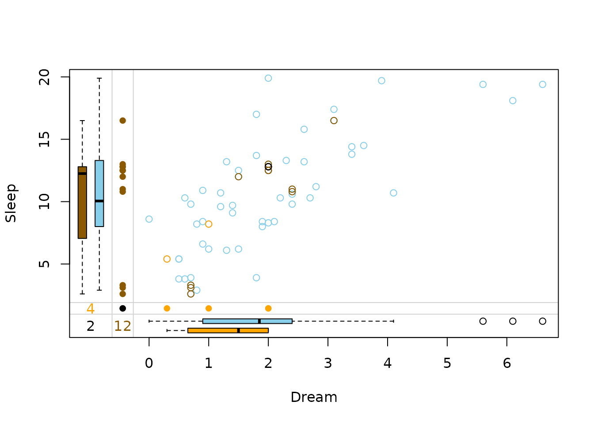

VIM introduces tools for visualization of missing and imputed values. Forthermore, methods to impute missing values are featured. This vignette will give a brief look at a common imputation scenario and showcase how VIM can be used to both impute the data and also interpret the results visually.

The left plot shows the amount of missings for each column in the
dataset sleep and the right plot shows how often each
combination of missings occur. For example, there are 9 rows wich
contain a missing in both NonD and Dream.
For simplicity, we will only look at the variables Dream
and Sleep for the remainer of this vignette. Bivariate
datasets can be passed to special functions that visualize the structure
of missings such as marginplot().
x <- sleep[, c("Dream", "Sleep")]
marginplot(x)
The red boxplot on the left
shows the distrubution of all values of Sleep where
Dream contains a missing value. The
blue boxplot on the left
shows the distribution of the values of Sleep where
Dream is observed.
In order to impute missing values, VIM offers a spectrum
of imputation methods like kNN() (k nearest neighbour),
hotdeck() and so forth. Those functions can be applied to a
data.frame and return another data.frame where
missings are replaced by imputed values.
x_imputed <- kNN(x)To learn more about all implemented imputation methods, three vignettes are available
vignette("donorImp") explains the donor-based
imputation methods hotdeck() and kNN()
vignette("modelImp") gives insight into the model-based
imputation methods regressionImp() and
matchImpute()
vignette("irmi") showcases the irmi()
method.The same functions that visualize missing values can also visualize the imputed dataset.
marginplot(x_imputed, delimiter = "_imp")
In this plot three differnt colors are used in the top-right. These colors represent the structure of missings.
Dream was missing initiallySleep was missing initiallyDream and Sleep were missing initiallyThe kNN() method seemingly preserves the correlation
between Dream and Sleep.